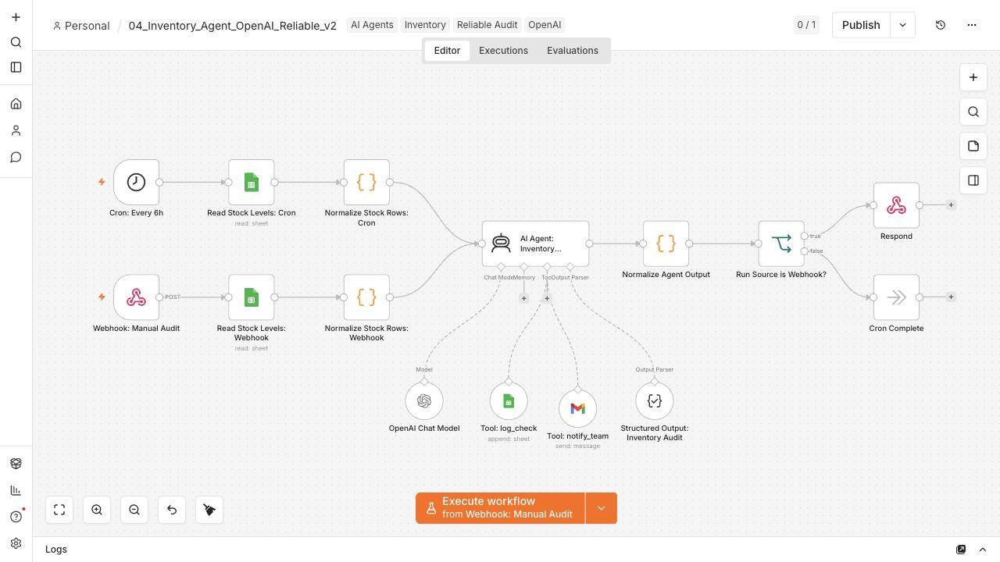
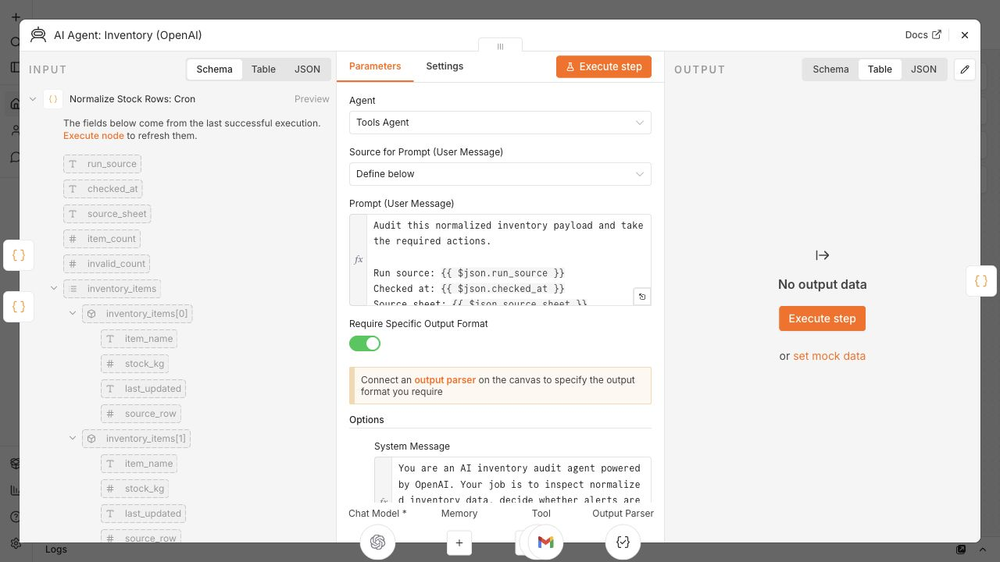

From Stock Sheet To Auditable Agent
V2 is the completed, evidence-backed milestone. It keeps the AI useful for interpreting inventory context, while n8n handles the reliability controls that make the workflow explainable and testable.
Normalized Stock Data
Weekly Data is converted into clean item records with item name, stock in kg, timestamp, and source row before it reaches the agent.
Guarded Agent Decisions
OpenAI receives structured inventory context and returns a required audit shape, including low-stock items, invalid rows, and actions taken.
Controlled Alerts
The workflow logs every run and only sends bounded Gmail notifications to the warehouse or supplier paths defined by the rules.
Workflow Map
[Cron / Webhook]
-> [Read Weekly Data]
-> [Normalize Stock Rows]
-> [AI Agent: Inventory Audit]
<- [OpenAI Chat Model]
<- [Structured Output Parser]
<- [Tool: log_check]
<- [Tool: notify_team]
-> [Normalize Agent Output]
-> [CheckLog Audit Trail]
-> [Low Stock?]
0 items -> log only
1-2 items -> warehouse alert
3+ items -> warehouse + supplier alert
-> [Webhook JSON Response or Cron Complete]


Reliability Controls
The design choice is intentionally conservative: make the workflow agentic enough to reason, but deterministic enough to trust.
No Silent Zeroes
Blank or non-numeric stock values are logged as invalid rows instead of being silently converted to zero and triggering false alerts.
Required Audit Log
Each run records low-stock counts, invalid row details, run source, and action summary into CheckLog for review.
Bounded Recipients
Email side effects stay within configured warehouse and supplier paths, making the notification surface explainable.
V2 Test Evidence
V2 was tested as a working inventory audit baseline before being documented here. The tests focused on the paths that matter most for reliability.
Log-Only Path
The workflow completes without Gmail alerts and still records the audit output for traceability.
Warehouse Alert
Low-stock inventory creates a bounded warehouse notification while preserving the CheckLog record.
Supplier Smoke Test
A separate smoke-test helper verifies supplier email delivery behavior without changing the main V2 workflow.
V3 Roadmap
V3 keeps OpenAI as the reasoning layer and expands from audit to guarded planning. Supplier-facing actions remain approval-based, not fully autonomous reordering.
Reliable Inventory Audit
Verified workflow with normalized stock inputs, structured output, CheckLog audit trail, webhook/cron separation, and bounded Gmail alerts.
OpenAI Planner With Recent Audit Context
The planner reads recent CheckLog history, drafts a reorder plan, explains actions taken, and validates plan fields before any supplier path can proceed.
Supplier Approval Boundary
Warehouse alerts can remain automatic for low-stock cases, while supplier-facing messages route through human approval before sending.
Supporting Artifacts
These files package the workflow evidence for review, demos, and presentation material. The supplier smoke test is a helper artifact, not the main workflow.
{kind=link}
{kind=link}
{kind=link}